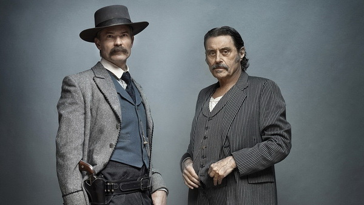
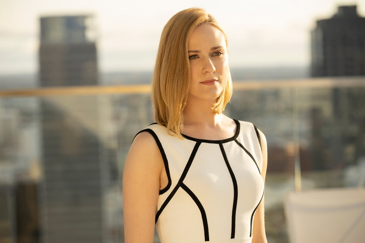
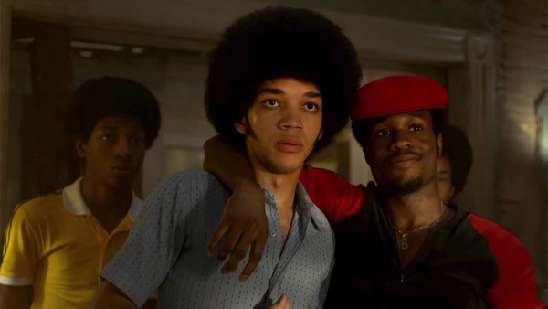
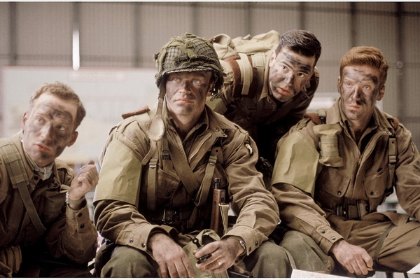
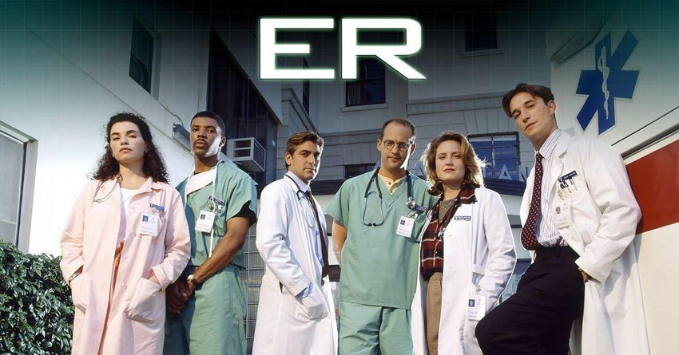
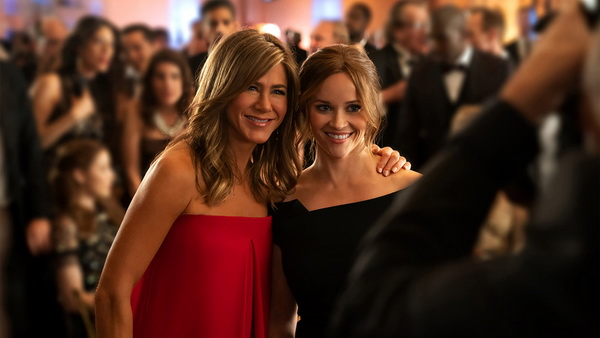
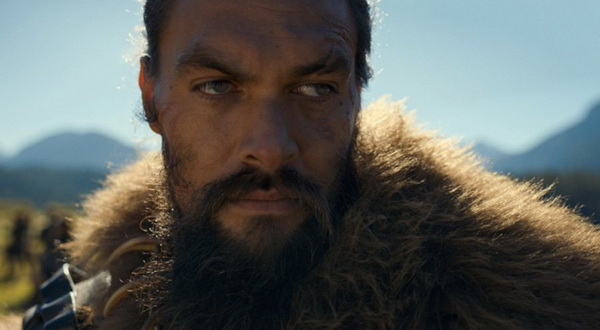
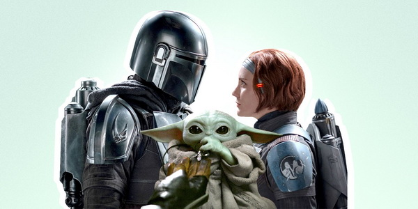
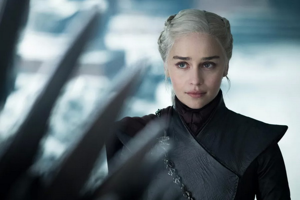
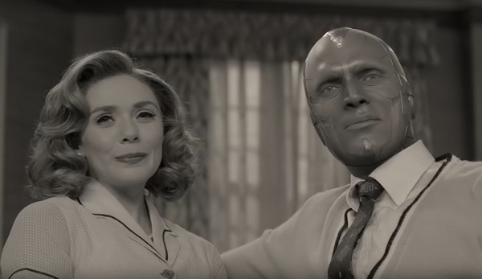

Những Phim Dài Tập Đốt Tiền Nhiều Nhất Mọi Thời Đại
Thời gian gần đây, phim dài tập dần khẳng định vị thế. Netflix thắng lớn những năm vừa qua, đặc biệt là giữa lúc đại dịch Covid-19 hoành hành. Các đại gia Walt Disney, Apple và WarnerMedia cũng lao vào cạnh tranh khốc liệt bằng kênh trực tuyến Disney+, Apple TV+ và HBO Max. Phim dài tập trở thành mảng ăn nên làm ra, vì vậy, chi phí sản xuất tăng lên một cách đáng kinh ngạc.
Công chúng luôn nghĩ, kinh phí TV show sẽ thấp hơn phim bom tấn. Tuy nhiên, điều này sai hoàn toàn. Từng có phim dài tập đầu tư hơn cả bom tấn ngoài rạp chiếu phim. Và trong thời đại hiện giờ, thực tế ấy ngày càng phổ biến hơn.
Dưới đây danh sách càng phim dài đốt tiền khủng nhất!
1. Deadwood – 4,5 triệu $ / tập

Năm sản xuất: 2004 - 2006
Thể loại: Tội phạm, Tâm lý, Lịch sử
Thời lượng: 36 tập
Chế tác: David Milch
Diễn viên: Timothy Olyphant, Ian McShane
Deadwood là tác phẩm của HBO, kể về khu định cư Black Hills thế kỷ 19. Vì phát hiện ra mỏ vàng, nhiều người đã đổ xô đến đây. Thị trấn miền Tây hoang dã trước Nội chiến là nơi tranh đấu giữa những kẻ ngoài vòng pháp luật như Al Swearengen và người thực thi công lí như Seth Bullock . Phim có 3 mùa, kết thúc vào năm 2007. Cho đến ngày nay, Deadwood vẫn rất nổi tiếng.
2. Westworld – 9 triệu $ / tập

Năm sản xuất: 2016 -
Thể loại: Tâm lí, Li kì, Giả tưởng
Thời lượng: 29 tập
Chế tác: Jonathan Nolan & Lisa Joy
Diễn viên: Evan Rachel Wood, Jeffrey Wright
Westworld lên sóng HBO từ 2016 và mỗi tập ngốn 9 triệu $.
West World là công viên kì ảo với đầy các trí tuệ nhân tạo. Tiền đổ vào để thể hiện bối cảnh nơi đây chân thật hết mức có thể. Westworld do cặp vợ chồng Lisa Joy và Jonathan Nolan – em ruột đạo diễn lừng danh Christopher Nolan tạo nên.
3. Rome – 10 triệu $ / tập

Năm sản xuất: 2005 - 2007
Thể loại: Hành động, Tâm lí, Lịch sử
Thời lượng: 22 tập
Chế tác: Bruno Heller, William J. MacDonald
Diễn viên: Kevin McKidd, Ray Stevenson
Rome phát sóng trên HBO 2 mùa từ 2005 – 2007, 10 triệu $ mỗi tập giúp phim tái hiện hình ảnh La Mã hoành tráng lên màn ảnh nhỏ. Phim xoay quanh những sự kiện lịch sử có thật khi Cộng hòa La Mã trở thành Đế quốc La Mã.
4. The Get Down – khoảng 10 $ / tập

Năm sản xuất: 2016 - 2017
Thể loại: Tâm lí, Nhạc kịch
Thời lượng: 11 tập
Chế tác: Stephen Adly Guirgis, Baz Luhrmann
Diễn viên: Justice Smith, Sameik Moore
The Get Down làm về nhạc hip-hop, tuy được đánh giá cao nhưng có đời sống khá ngắn ngủi. Phim có 11 tập, phát sóng trên Netflix. Ngân sách 120 triệu $, tốn phần lớn cho phần nhạc, diễn viên và bối cảnh quay tại New York.
5. Friends – 10 triệu $ / tập

Năm sản xuất: 1994 - 2004
Thể loại: Hài, Tình cảm
Thời lượng: 235 tập
Chế tác: David Crane, Marta Kauffman
Diễn viên: Jennifer Aniston, Courteney Cox
Friends là sitcom hài vô cùng nổi tiếng về nhóm bạn tại thành phố New York. Ra mắt từ năm 1994, kéo dài 10 mùa, cho đến nay, Friends vẫn thuộc nhóm những TV series nổi tiếng nhất mọi thời đại.
Ở các mùa cuối, kinh phí thực hiện lên đến 10 triệu $ / tập vì dàn diễn viên trở nên vô cùng nổi tiếng. Tiền lương ngốn phần lớn chi phí.
6. Band Of Brothers – 12,5 triệu $ / tập

Năm sản xuất: 2001
Thể loại: Hành động, Tâm lí, Lịch sử
Thời lượng: 10 tập
Chế tác:
Diễn viên: Scott Grimes, Damian Lewis, Ron Livingston
Band Of Brothers thuộc top phim truyền hình đắt đỏ nhất và cũng được khán giả đánh giá cao nhất lịch sử. Phim kể về Easy Company – tiểu đoàn thành lập vào thế chiến thứ 2, chuyên thực hiện sứ mệnh ở vùng chiến sự châu Âu.
12,5 triệu $ / tập là cái quá cao đối với phim dài tập vào thời điểm 2001. Tuy nhiên, đứng sau bộ phim là hai tên tuổi khổng lồ của nền công nghiệp điện ảnh - Tom Hanks và Stephen Spielberg. Vì lẽ đó, HBO bật đèn xanh Band Of Brothers.
7. ER – 13 triệu $ / tập

Năm sản xuất: 1994 - 2019
Thể loại: Tâm lí, Lãng mạn
Thời lượng: 331 tập
Chế tác: Michael Richton
Diễn viên: Anthony Edwards, George Clooney,
ER đặt bối cảnh tại bệnh viện đa khoa Chicago, là TV series rất nổi tiếng ở thập niên 90. Michael Crichton - biên kịch Jurassic Park là chế tác, phim là bệ phóng cho nhiều ngôi sao Hollywood sau này như George Clooney.
Ban đầu, chi phí phim không quá cao. Tuy nhiên, vào thời kì nổi tiếng cực điểm, các nhà sản xuất đã trả lương cao ngất ngưởng để giữ chân George Clooney. Điều này lại thành ra là quyết định thiếu khôn ngoan vì cái được chẳng đủ bù cái mất.
8. The Crown – 13 triệu $ / tập
Năm sản xuất: 2016 -
Thể loại: Tiểu sử, Tâm lí, Lịch sử
Thời lượng: 60 tập
Chế tác: Peter Morgan
Diễn viên: Claire Foy, Olivia Colman
The Crown do Netflix sản xuất, kể về cuộc đời Nữ hoàng Anh Elizabeth đệ nhị từ thời trẻ tới hiện tại.
Phần lớn tiền bạc dành tái hiện những sự kiện lịch sử nổi tiếng như cảnh đám cưới của Nữ hoàng Elizabeth và hoàng thân Philip, nữ diễn viên Claire Foy mặc chiếc váy trị giá tận 37.000 $. Đầu tư tỉ mỉ từng chi tiết khiến công chúng đánh giá rất cao bộ phim.
9. The Morning Show – 15 triệu $ / tập

Năm sản xuất: 2019 -
Thể loại: Tâm lí
Thời lượng: 20 tập
Chế tác: Jay Carson, Kerry Ehrin
Diễn viên: Jennifer Aniston, Reese Witherspoon
Gã khổng lồ công nghệ Apple rót tiền vào nền công nghiệp điện ảnh trên kênh streaming Apple TV+. Theo nguồn tin, họ dự định chi đến 6 tỷ $ cho TV show và phim điện ảnh.
The Morning Show mời loạt ngôi sao đình đám như Jennifer Aniston, Reese Witherspoon và Steve Carel. Phần lớn dành để trả lương. Hai nữ diễn viên nhận hơn 2 triệu $ mỗi tập.
10. See – 15 triệu $ / tập

Năm sản xuất: 2019 -
Thể loại: Hành động, Tâm lí, Giả tưởng
Thời lượng: 11 tập
Chế tác: Steven Knight
Diễn viên: Jason Momoa
Một phim khác cũng do Apple TV+ dành kinh phí khổng lồ tương tự The Morning Show là See do ngôi sao Aquaman Jason Momoa đóng chính.
Đặt bối cảnh tương lai, See tốn nhiều tiền CGI, các hiệu ứng đặc biệt và lương diễn viên. Cuối cùng, tổng chi phí khoảng 15 triệu $ / tập.
11. The Mandalorian – 15 triệu $ / tập

Năm sản xuất: 2019 -
Thể loại: Hành động, Phiêu lưu, Giả tưởng
Thời lượng: 24 tập
Chế tác: Jon Favreau
Diễn viên: Pedro Pascal, Gina Carano
Do đạo diễn Iron Man – Jon Favreau cầm trịch, The Mandalorian của Disney là hit bự lấy bối cảnh Star Wars nhưng phim không liên quan đến vũ trụ gốc.
Chất lượng phim tốt, công chúng đánh giá cao. Ngoài ra, không thể không kể đến Baby Yoda – vô cùng viral trên mạng xã hội. Phim sử dụng kĩ xảo, CGI và đặc biệt là Baby Yoda – tiêu tốn khoảng 2 triệu $ / tập.
12. Game Of Thrones – 15 triệu $ / tập (mùa cuối)

Năm sản xuất: 2011 - 2019
Thể loại: Hành động, Phiêu lưu, Tâm lí
Thời lượng: 73 tập
Chế tác: David Benioff, D.B. Weiss
Diễn viên: Kit Harington, Emilia Clarke, Peter Dinklage
Chẳng ngạc nhiên gì khi thấy Game Of Thrones ở danh sách này. Trò Chơi Vương Quyền càn quét cả thế giới từ 2011 và nhiều năm liền vẫn giữ vững vị thế.
Bối cảnh hoành tráng, dùng CGI, hằng hà sa số kĩ xảo đặc biệt cùng hàng tá những thứ không thể gọi tên. Mùa cuối quay đại cảnh chiến trận, khiến nhà sản xuất chi cho mỗi tập đến 15 triệu $. Mặc dù các mùa trước không tiêu tốn như thế nhưng cũng không kém bao nhiêu.
13.The Pacific – 20 triệu $ / tập
Năm sản xuất: 2010
Thể loại: Hành động, Phiêu lưu, Tâm lí
Thời lượng: 10 tập
Chế tác:
Diễn viên: James Badge Dale, Joseph Mazzello
Vào thập niên 2010, The Pacific của HBO được nhớ đến với danh hiệu TV series đắt đỏ nhất lịch sử. Nhà sản xuất Steven Spielberg và Tom Hanks chi bộn tiền tái hiện loạt trận chiến đẫm máu và bạo lực thời thế chiến thứ II.
Kinh phí dự kiến khoảng 100 triệu $ / 10 tập nhưng cuối cùng lại đội lên gấp đôi – ngang giá làm bom tấn Hollywood do phải chi quá nhiều cho bối cảnh thế chiến thứ 2.
14. Wandavision – 25 triệu $ / tập

Năm sản xuất: 2021
Thể loại: Hành động, Hài, Tâm lí
Thời lượng: 9 tập
Chế tác: Jac Schaeffer
Diễn viên: Elizabeth Olsen, Paul Bettany
Sau thành công rung chuyển phòng vé của loạt phim MCU, Disney sẵn sàng chi bộn tiền để đầu tư các sản phẩm phim mới từ Marvel. Wandavision, The Falcon And The Winter Soldier, Hawkeye và loạt phim riêng sắp tới đều được hãng chăm chút.
Đang ra mắt trên Disney+, Wandavision làm cả thế giới phát sốt vì cô phù thủy Wanda. Nội dung hài hước, gay cấn, sáng tạo và đột phá, phim hay này đưa Elizabeth Olsen trở thành sao nữ nổi tiếng nhất thế giới.
Thông qua loạt TV show này, vũ trụ điện ảnh Marvel dần hình thành phase 4 – mở ra đa vũ trụ đầy hấp dẫn.
15.The Lord Of The Rings – 1 tỷ $ cả dự án
The Lord Of The Rings là một trong những thương hiệu nổi tiếng nhất, nhờ thành công cả về mặt thương mại lẫn chuyên môn với 3 phần The Lord Of The Rings và The Hobbit.
Amazon chi 250 triệu $ giành quyền sản xuất và phát triển phần tiền truyện, cam kết 5 mùa phim. Tổng chi phí dự kiến khoảng 1 tỷ $. Để không bị xem là thất bại, phim bắt buộc phải trở thành siêu phẩm dài tập thành công nhất lịch sử.
Lược dịch theo screenrant